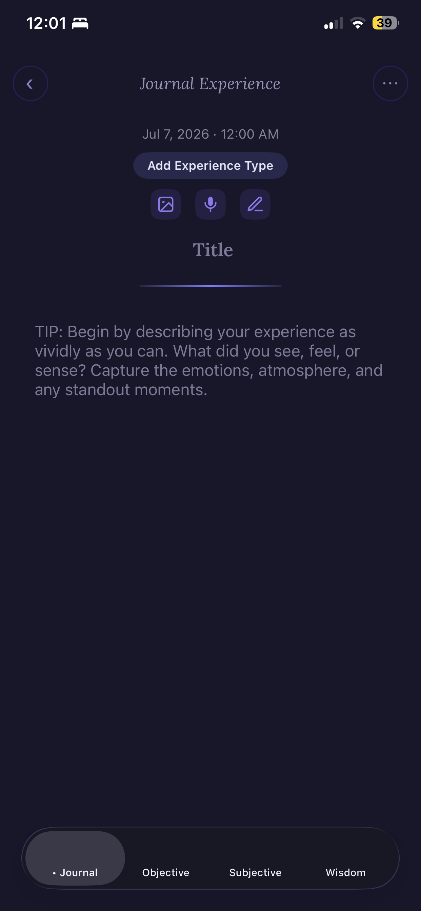
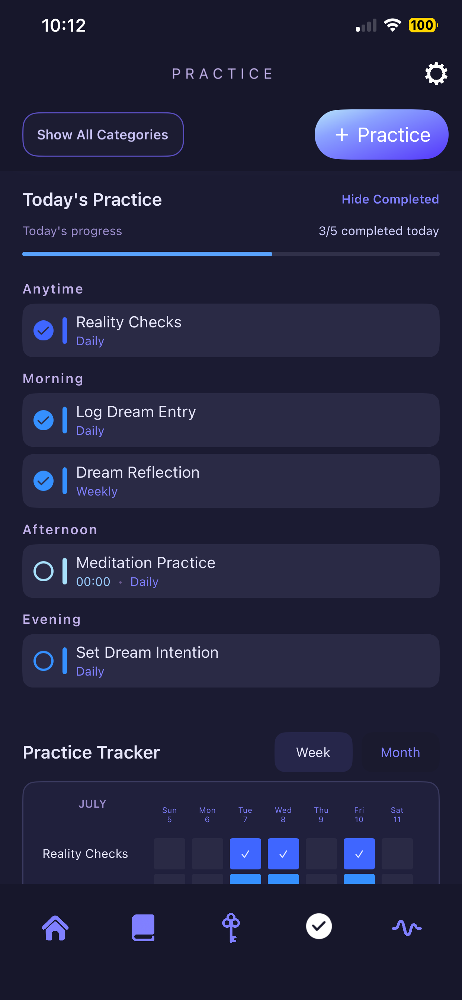
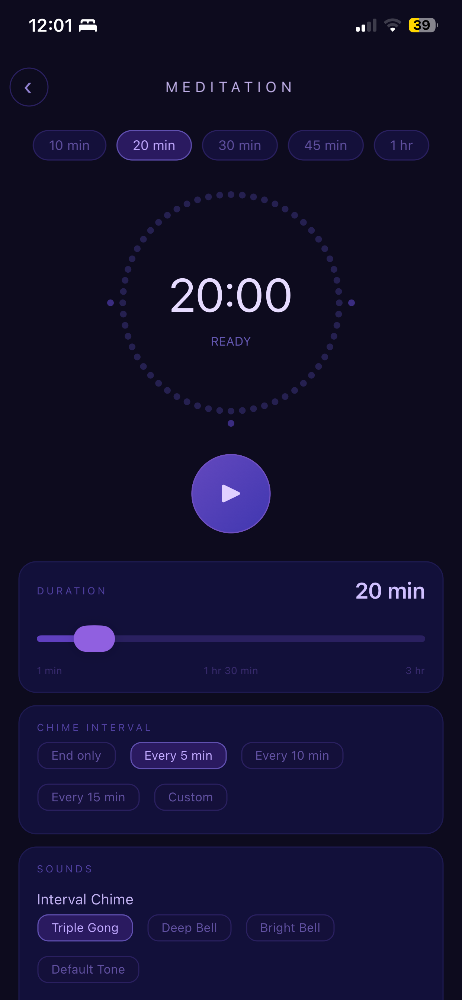
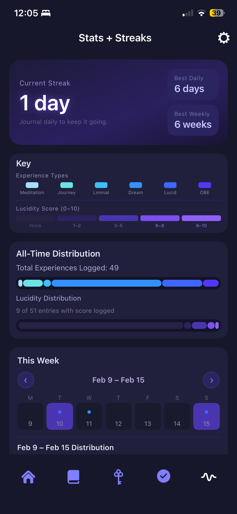

a journal & a practice
A sanctuary for your
inner experiences.
One quiet place for your dreams, your meditations, and all the liminal spaces between waking and deep sleep.
why this exists
Your attention holds power.
Most of the day, it moves outward, pulled by our senses toward the world around us: work, screens, other people, everything happening outside of us.
But there's another direction, one we can cultivate with awareness, turning inward. When we learn to hold onto that thread of awareness as we move through the liminal states between waking and deep sleep, we strengthen our ability to recognize and enter these experiences consciously. It's there in your dreams, in the moments you felt you left your body, in the stillness after meditation.
DreamWave exists to help you expand your awareness inward toward these experiences and build a practice around them, bringing these experiences together so what happens in your dreams, your meditations, and the space between waking and sleep becomes something you integrate into waking life.
bringing it together
What becomes possible when
you bring them together.
These inner experiences are communicating with you. When you bring them together in one place, insights and connections form. A deeper language of symbols and awareness emerges. Through integration, a different kind of understanding develops, one that cultivates a deeper knowing, a deeper wisdom of yourself and the nature of yourself.
One private space, on your own device, to keep record of your inner experiences and cultivate a daily practice that supports inner exploration.
This is a calling for those who want to remember.
how it works
Record. Reflect. Cultivate.
Three simple rhythms practiced daily.
Record
The experience while it's at the forefront of your memory.
Reflect
On symbolic language, waking connections, and deeper meanings of your experience.
Cultivate
A daily inner practice to build a deeper relationship with your inner world.
inside the app
Everything the inner life needs.
Nothing it doesn't.
Journal
Quick entry and audio recording to capture fresh experiences. A multi-tab layout for going deeper, custom metrics to track what matters to you, and an optional Socratic AI.
Symbol Library
Discover the language of your inner world, building your own library of symbols shaped by your unique insights and experiences.
Your Practice
Create custom recurring practices and routines, and watch your practice progress over time.
Tools for the Threshold
A meditation timer, binaural beats, custom and guided breathwork, and lucid sound cues to bring into your practice.
Tracking
Moon phase correlations with your experiences, lucidity heat maps, journaling streaks, and your experience types over time.
see it in motion
A quiet place, in your hand.





the invitation
Awaken, and remember.
Bring the luminosity of your inner experience to waking life, widening your awareness and deepening your presence across both your inner and outer worlds.
There's a frontier inside every one of us, available to be explored. The calling is now.